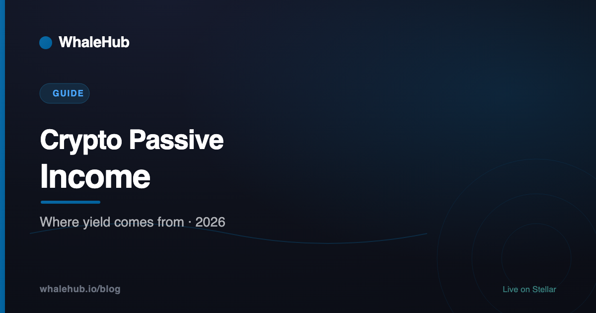

Crypto Passive Income: Where the Money Actually Comes From

Most guides to crypto passive income list products. That is the wrong axis, because two products offering the same headline number can be completely different trades. Sort instead by where the money comes from — there are only four sources, and each has a characteristic ceiling and a characteristic failure.
Who is paying me, and why would they keep doing it? If the answer is clear — borrowers, traders, users of a service — the yield is real and bounded. If it is "the protocol", you are being paid in newly minted tokens, and the question becomes who buys them. If nobody can answer at all, that is the answer.
Source 1: Issuance
Routes: proof-of-stake staking, liquid staking, restaking.
The network creates new tokens and pays them to whoever secures it. This is the closest thing crypto has to a structural yield: it exists because the network needs security, and it will continue as long as the network does.
The cost is that it is dilution you are on the right side of. If a network issues 4% annually and you earn 4%, your share of the network is flat — you have kept pace, not gained. Non-stakers pay for it.
Ceiling: the issuance rate, typically low single digits on large networks. Failure mode: slashing, and the token's price. A 5% yield on an asset down 60% is not income. Note also that some major networks — Stellar among them — have no issuance at all, so no staking yield exists to earn; see XLM staking.
Source 2: Fees
Routes: AMM liquidity provision, concentrated liquidity, protocol revenue sharing.
Someone pays to use a service and part of that payment reaches you. Real revenue from real activity — genuinely the healthiest source, and the one with the most disguised cost.
For liquidity provision, that cost is impermanent loss: as prices move, an automated market maker mechanically sells the rising asset and buys the falling one. You collect fees and simultaneously run a losing position against directional movement. In a volatile pair, fees frequently lose that race. The advertised APY counts the fees and not the loss.
Ceiling: actual trading volume and the fee tier. Failure mode: impermanent loss exceeding fees — which is normal, not exceptional, in volatile pairs. Stable pairs invert the picture: minimal divergence, thinner fees.
Source 3: Interest
Routes: DeFi lending, tokenised treasuries, stablecoin strategies.
A borrower pays for capital. The oldest financial arrangement there is, and the easiest to reason about because the counterparty and the payment are both explicit.
On-chain, lending protocols set rates by utilisation and enforce repayment through over-collateralisation and liquidation. No impermanent loss, no range management. The risks are contract failure, oracle manipulation, socialised bad debt, and not being able to withdraw promptly when utilisation is high. For eligible investors, tokenised treasuries pay a government-bond yield with a much shorter risk list.
Ceiling: what borrowers will pay — which tracks leverage demand, so it is high in bull markets and low in quiet ones. Failure mode: bad debt, and withdrawal constraints exactly when you want out.
Source 4: Other people's deposits
The category to recognise on sight. Yield paid not from revenue but from newly minted tokens, or from the deposits of people arriving after you. It can be extremely lucrative and it is structurally temporary.
Token emissions are the common, legitimate-ish version: a protocol pays in its own token to attract liquidity, betting it can convert that into lasting usage before the emissions stop. Sometimes it works. The yield is real in that you receive real tokens; it is not income, because it is funded by dilution rather than revenue.
The illegitimate version has no revenue at all and pays earlier depositors with later deposits. It is identifiable by the same tell: nobody can explain who generates the money.
Ceiling: whatever the emissions schedule allows. Failure mode: the reward token falls faster than you accrue it — the single most common way people earn a large advertised APY and end up down.
What "passive" actually costs
Very little of this is passive once you account for maintenance:
| Route | Ongoing work | Genuinely passive? |
|---|---|---|
| Liquid staking token | Essentially none | Yes |
| Tokenised treasury | None | Yes |
| Auto-compounding vault | Periodic review | Mostly |
| Lending supply | Watch utilisation and rates | Mostly |
| Wide-range liquidity | Monitor IL, claim rewards | Partly |
| Concentrated liquidity | Active range management | No — this is a job |
| Any leveraged position | Constant headroom management | No |
Where manual claiming and reinvesting is required, auto-compounding removes most of the labour and the missed cycles. And note that a position needing weekly attention is a part-time job with a yield attached — fine, if that is what you signed up for.
Building a position
- Identify the source before the number. Issuance, fees, interest, or emissions. This decides everything else.
- Discount emissions heavily. Value them at what you think the token will be worth when you can actually sell it, not at today's price.
- Check the APY's construction. Compounded, in what, net of what. See APY vs APR.
- Size for total loss. Not for the expected case. Any single position should be survivable at zero.
- Prefer protocols that have survived a crash. Track record is the one input that cannot be manufactured.
- Account for tax as you go. Rewards are frequently taxable on receipt, which can leave a bill on tokens that have since fallen.
- Re-check periodically. Rates move, parameters change by governance, and emissions schedules end. Nothing here is set-and-forget for years.
Sustainable crypto yield is unexciting — low single digits from issuance, rates roughly in line with the wider market from lending, and fee income that has to beat impermanent loss to count. The exciting numbers are almost always emissions, risk compensation, or both. Knowing which you are holding is most of the work.
Frequently asked questions
What is the safest way to earn passive income in crypto?
There is no safe option, only a spectrum. The milder end is supplying a major stablecoin to a long-established lending protocol, or holding a tokenised treasury product if you are eligible — both have understandable yield sources and no exposure to impermanent loss. Nothing in crypto carries deposit insurance or a reversal mechanism.
How much can you earn from crypto passive income?
Sustainable yields track what the underlying activity actually generates: typically low single digits for staking on large networks, and a range roughly in line with short-term rates for well-established lending and stablecoin strategies. Anything far above that is either compensating for real risk or paying out of token emissions, which is dilution rather than income.
Is crypto passive income really passive?
Rarely, once you look at the maintenance. Liquidity positions need monitoring for range and impermanent loss, borrowed positions need headroom management, rewards need claiming and compounding, and every position needs periodic reassessment as parameters change. The closest to genuinely passive are holding a yield-accruing token or using an auto-compounding vault.
Do you pay tax on crypto passive income?
In most jurisdictions yes, and often at the moment rewards are received rather than when sold, which can create a tax liability on tokens that later fall in value. Rules differ significantly by country and by the type of yield. This is worth getting specific local advice on before scaling a position, not after.
What is the difference between real yield and emissions?
Real yield is paid from revenue the protocol actually earns — trading fees, borrowing interest, service fees. Emissions are newly minted tokens paid to attract deposits, which dilute existing holders and are funded by nothing. Emissions-based yield can be lucrative while it lasts but is structurally temporary; real yield has a ceiling and a floor.
Can you lose money earning passive income in crypto?
Easily, and usually without any hack involved. Impermanent loss can exceed fees earned, a reward token can fall faster than it accrues, a borrowed position can be liquidated in an ordinary drawdown, and a platform holding your assets can fail. A yield figure is a rate, not a guarantee of a positive outcome.
WhaleHub is a yield-optimization protocol on Stellar. We stake AQUA, aggregate ICE voting power, and auto-compound Aquarius rewards for stakers. This series explains the Stellar DeFi stack — and the wider market around it — in plain English.
Read more


Yield from protocol revenue
WhaleHub stakes AQUA, aggregates ICE voting power on Aquarius, and compounds what that position earns.
Launch the appThis article is for educational and informational purposes only and is general information, not financial advice. DeFi involves risk, including smart-contract failure, liquidation, and the total loss of capital. Protocol mechanics and parameters change — verify current details with the protocol before depositing.